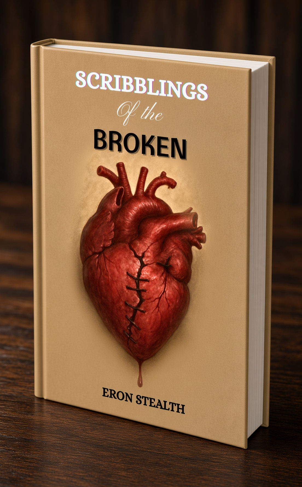
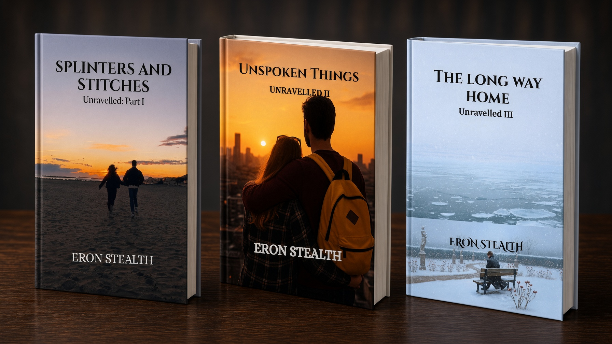

Writings & Worlds
Poetry, fiction, and the spaces between
Poetry, fiction, and the spaces between

Poetry · 2025
A collection of poems by Eron Stealth exploring confusion, longing, conflict, and the path toward healing.
Read more & sample poems →
Romantic Series · 3 Books · 2025
A three-book romantic series following Alex and Maya from a single glance across a university hall through the long, uneven work of staying.
Explore the series →Dark Fantasy Mystery · Forthcoming
Enter Aethelburg, a city beneath rift-touched skies, where machinery and secrets refuse to stay buried.
Step into the city →From the opening of Echoes of Broken Gears:
Join the Discord for announcements, book talk, and early word on new work.